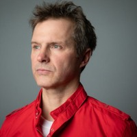

Gerad Argeros
Filmmaker, film subject, panelist · 2024
At the festival
2024
- Director Fox Chase Boy
- Subject Fox Chase Boy
- Panelist Personal Stories, Universal Impact: The Power of Investigative Filmmaking Panel
Biography
Gerad Argeros is a writer, actor, producer, and father from Northeast Philadelphia. Now based in Brooklyn, Argerosʼ original theatrical performance Fox Chase Boy channeled bar basement open mic stand-up comedy aesthetics, maitreʼd hotel improvisation, DIY and Punk performance venue drink pricing, and avant garde experimental theater haughtiness. The live show which began as a deeply personal story evolved into the short documentary film Fox Chase Boy, a bold reminder that some families solve problems best in the street.
From the festival website (archived), 2024
Other bios (1)
Gerad Argeros is a Brooklyn-based writer, actor, producer, and father from Northeast Philadelphia. His theatrical performance Fox Chase Boy blended stand-up comedy, improvisation, and avant-garde theater. The show evolved into a short documentary film, exploring family problem-solving in street settings.
From the 2024 catalogue, p. 41